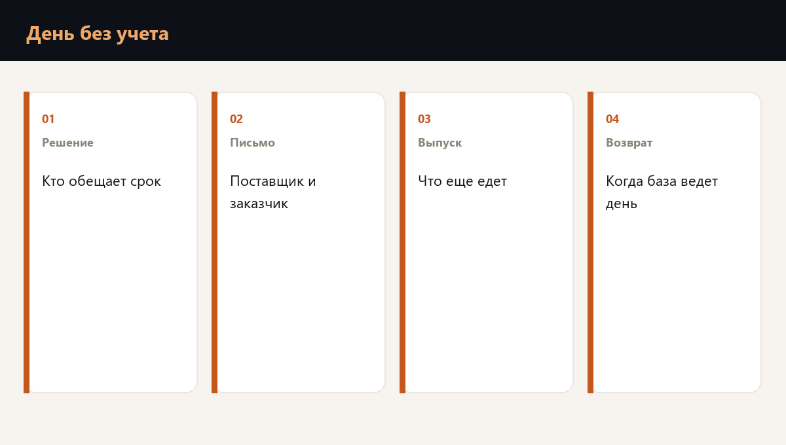

День без учетной системы это день решений, текстов и урезанного выпуска. Кто имеет право обещать новый срок, что именно уходит поставщику и заказчику, что компания говорит, если о событии спрашивают публично, и какая доля производительности остается.

Кто решает в этот день
Право обещать срок клиенту и право остановить отгрузку записаны до атаки. В день без базы эти два права конфликтуют: продажа хочет сохранить отношения, площадка хочет не обещать то, что не отгрузит.
Приоритет заранее один. Сначала то, что компания может отгрузить вторым контуром. Затем честный новый срок по остальному. Спор двух директоров в мессенджере клиент читает как два разных обещания.
| Вопрос дня | Кто отвечает | Что остается в записи |
|---|---|---|
| Какой поток еще едет | Площадка | Список позиций второго контура |
| Какой срок называем | Владелец контракта | Письмо с одним сроком |
| Что говорим публично | Один голос | Факт, последствие для поставки, следующий час связи |
| Когда база снова ведет день | Финансы и учет вместе с ИТ | Доля выпуска по часам |
Поставщики, заказчики и публичное объяснение
Поставщику уходит просьба удержать или сдвинуть ближайшую поставку сырья, с причиной в одном предложении и с часом, когда компания подтвердит график. Заказчику уходит новый срок только по тем позициям, которые площадка подтвердила.
Если о событии спрашивают снаружи, компания говорит факт закрытия системы, последствие для отгрузки и час следующего сообщения. Версию о виновнике, которой нет, она не добавляет.
- Один срок в одном письме. Второе письмо в тот же день срок не меняет.
- Поставщик сырья узнает о паузе раньше, чем машина уже стоит у ворот.
- Публичный текст совпадает с текстом заказчику по фактам.
- Обещание полной отгрузки в день без базы в письма не входит.
Киберполис, если он есть, платит по своим условиям и после своих документов. Он не выбирает, какой срок назвать заказчику в этот час.
Что считает проверка готовности
Проверка готовности к шифровальщику собирает этот день в цифры: какая доля выпуска жива без базы, сколько стоит потерянный день, кто пишет контрагенту и какой текст уже лежит в папке дежурного.
Частые вопросы
Решение о выкупе не возвращает отгрузку в тот же час и не заменяет второй контур. Его принимает заранее названный круг, по правилу, записанному до атаки. В письме заказчику этого решения нет.
По доле выпуска, которую она снова подтверждает документами. Пока документ на отгрузку из базы не совпал с тем, что уехало, день еще ручной.
Нужен короткий, и он собран из тех же трех фраз, что письмо заказчику: что закрыто, что это значит для поставки, когда будет следующая новость.
Готова ли команда к первому часу кризиса
Планы проверяются не чтением, а сценарием. Диагностика покажет пробелы, корпоративный формат отрабатывает их с вашей командой на ваших процессах.